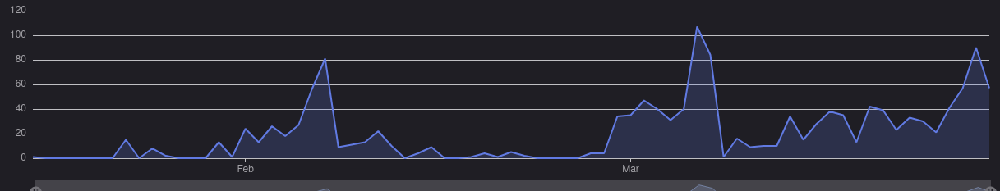

Postmortem
Iteration 2 retrospective followup
A problem our group had in the first two iterations of this project was procrastination; we would only really get started on the iteration a week before the deadline. For iteration 3, we all decided it would be a good idea to start working right away and not leave things until the last minute. Our method of measuring this was to compare the frequency of commits at the beginning of the iteration with the frequency of commits at the end of the iteration and if we found that the frequencies were similar, it would provide us good evidence we met our goal. After analyzing these frequencies, we feel that we were fairly successful in this goal. Overall, our frequency of commits stayed relatively stable throughout the iteration (between 10-40 commits per day). It was only two days before the deadline that our commits ramped up (March 26, with 90 commits). Despite this, it was still a major improvement in our time management compared to the first two iterations.
Commits over time
What we’d do differently
Directories for each system
Around halfway through iteration 2 it became clear that we should have been organizing files better, there are parts of logic that use 5+ files that could be grouped into a directory. This would have made working with the project a bit easier since it would have been easy to tell what was grouped together. Related to this, we probably should have defined more about these systems up front, for example everything related to the players inventory probably could have been grouped more effectively.
Execution of Battles
Battles as a single feature in Iteration 3 was a good idea in terms of ensuring that we had enough finished features (so we didn’t focus on making new features in the game which would often be shallow). However in hindsight, battles is made up of 2 or 3 features which could have been split over iteration 2 and 3 or been the only focus of iteration 3. It was effectively impossible to realize this without actually starting the battles which didn’t happen until later in Iteration 3 since we had some carry over from Iteration 2, so we couldn’t really adapt.
Scope Creep
Overall architecture of the system was absolutely insane. I do not think any of us imagined how large and complex this project would end up being. We were probably victims of scope creep.
Project Stats
General Stats
| Testable Classes | 182 |
| Testable Methods | 983 |
| Testable Lines | 3550 |
| Testable Branches | 1137 |
| Total Files | 534 |
| Total Directories | 72 |
| Total lines in .java files | 21091 |
| Merges | 134 |
| Issues closed | 207 |
| Commits | 1746 |
Classes per Layer
| UI | 64 |
| Logic | 53 |
| Data | 44 |
| DSO | 20 |
Outstanding Bugs
-
Not technically a bug but we didn’t finish the item cards for battles and accidentally left in a
throw UnsupportedOperationException - There is a crash related to opening packs that we never tracked down and only occurred occasionally
Changes from Iteration 1
The project was originally supposed to be a card collecting and battling game and that is exactly what it is. I don’t think it changed much from our initial idea but I do think that we all underestimated just how large of a project this would become. That being said, it is super cool so we wouldn’t change a thing.